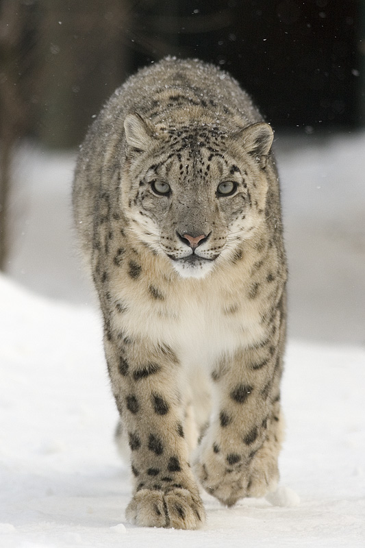

🐾 МИНИЙ ДУРТАЙ АМЬТАН
Ирвэс 🐆
🏔️ Өндөр уулсын нууцлаг амьтан

💛 Миний дуртай амьтан бол ирвэс.
🏔️ Энэ амьтан өндөр ууланд амьдардаг.
🍖 Ирвэс мах иддэг.
⚡ Ирвэс хурдан хөдөлдөг.
🏔️ Өндөр уулсын нууцлаг амьтан

💛 Миний дуртай амьтан бол ирвэс.
🏔️ Энэ амьтан өндөр ууланд амьдардаг.
🍖 Ирвэс мах иддэг.
⚡ Ирвэс хурдан хөдөлдөг.